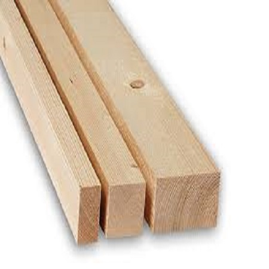
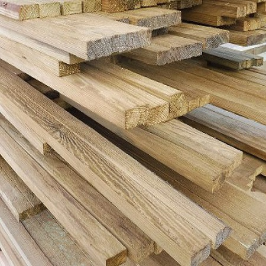

G.J.S. Galiński
Kontrłaty


Kontrłaty stanowią elementy konstrucji drewnianej. Ułożone prostopadle do łat stanowią konstrukcję dachową. Standardowy wymiar to: 20x45mm.
Wymiary
- Standardowy wymiar to: 20x45mm.
Cena
1,30zł/ mb brutto